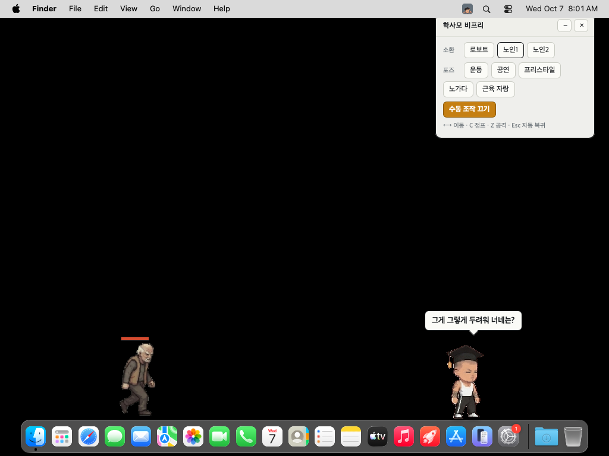

게임 「학사모 비프리 아파트공사현장」의 주인공이 바탕화면 아래를 걸어 다닌다. 가끔 멈춰서 역기를 들고, 랩을 하고, 벽돌을 쌓고, 한마디씩 한다. 노인이나 로보트를 불러 싸움을 붙일 수 있고, 직접 조종할 수도 있다. 윈도우와 맥에서 돌고, 설치 파일은 6MB다.
만들면서 보니 데스크톱 펫의 정체는 모니터만 한 투명 창 하나였다. 그 창이 화면을 덮고 있으면서도 아무것도 가리지 않게 만드는 일이 이 프로젝트의 거의 전부다. 여기서는 그 과정에서 걸린 것들과, 무엇을 왜 골랐는지를 적는다.

전체 그림
↔ 그림은 옆으로 밀어서 보세요
왜 Tauri인가
바탕화면 앱을 웹 기술로 만드는 길은 크게 둘이다. 크로미엄을 통째로 싸 가는 Electron과, 운영체제에 이미 있는 웹뷰를 빌려 쓰는 Tauri.
크로미엄(Chromium) — 구글이 이끄는 오픈소스 웹 브라우저. 크롬과 엣지가 이걸 바탕으로 만들어진다. Electron은 앱마다 이 브라우저를 통째로 넣어서 배포한다. 앱 하나가 사실상 브라우저 하나를 들고 다니는 셈이라 무겁다. Tauri는 컴퓨터에 이미 깔린 브라우저 부품(웹뷰)을 빌려 쓰기 때문에 그만큼이 빠진다.
| Electron | Tauri | |
|---|---|---|
| 화면 | 크로미엄을 같이 배포 | 윈도우는 WebView2, 맥은 WKWebView를 빌린다 |
| 본체 언어 | Node.js | Rust |
| 설치 파일 | 보통 수십 MB를 넘긴다 | 이 앱은 6MB (맥은 7MB) |
| 대가 | 무겁다 | 웹뷰가 운영체제마다 달라 같은 코드가 다르게 돈다 |
바탕화면에 상주하는 물건이 무거우면 지운다. 받는 사람 대부분이 인스타그램에서 넘어와 링크 하나 눌러 보는 사람들이라, 크기가 곧 이탈률이다. 그래서 Tauri를 골랐다. 대가는 실제로 치렀다 — 같은 소리 재생 코드가 한쪽 웹뷰에서는 아무 소리도 안 냈다(아래 「소리」).
Rust와 화면을 나누는 법
↔ 그림은 옆으로 밀어서 보세요
트레이 메뉴는 누른 항목의 id(spawn:robot, mode:manual 같은 것)만
화면으로 던진다. Rust는 그게 무슨 뜻인지 모른다. 해석은 JS가 한다.
그래서 메뉴에 기능을 하나 더할 때 Rust를 다시 컴파일할 일이 거의 없다.
권한 파일이 없으면 전부 조용히 죽는다
처음 실제로 띄웠을 때 트레이 메뉴가 하나도 안 먹었다. 소환도, 포즈도, 수동 조작도.
오류창도 콘솔 메시지도 없었다. 원인은 src-tauri/capabilities/ 폴더가 아예 없던 것.
Tauri 2는 거기 적힌 권한만 화면에 내주고, 나머지 호출은 조용히 거부한다.
이벤트를 듣는 것(event.listen)조차 권한이라, 메뉴 신호를 받는 귀가 처음부터 없었다.
{
"identifier": "default",
"windows": ["main"],
"permissions": [
"core:default",
"core:window:allow-set-ignore-cursor-events",
"core:window:allow-set-focus"
]
}
창 설정을 바꾸는 권한(setter)은 core:default에 안 들어 있다. 읽는 것만 있다.
그래서 쓰는 것만 골라 따로 적는다.
문제 1 — 덮었는데 눌러져야 한다
모니터만 한 창이 맨 위에 있으면, 바탕화면도 다른 창도 누를 수 없다. 그래서 평소엔 창을 클릭 통과로 둔다. 클릭이 창을 뚫고 밑으로 떨어진다. 그런데 그러면 캐릭터와 조작판도 안 눌린다. 필요한 순간에만 통과를 꺼야 한다.
문제는 통과 중에는 마우스 이벤트가 창으로 아예 안 온다는 것이다. 커서가 캐릭터 위에 왔는지 화면 혼자서는 알 수 없다. 그래서 Rust가 운영체제한테서 커서 위치를 직접 읽어 넘겨준다.
↔ 그림은 옆으로 밀어서 보세요
문제 2 — 키보드는 누구 것인가
펫은 두 모드가 있다. 혼자 걸어 다니는 자동, 방향키로 직접 움직이고 치는 수동. 처음엔 화면 코드에서 "자동일 땐 키를 무시한다"만 했다. 그걸로는 모자랐다.
키는 포커스를 쥔 창으로만 간다. 펫 창이 포커스를 쥐고 있으면, 펫이 그 키를 무시하는 순간 그 키는 원래 쓰려던 메모장에도 안 가고 그냥 사라진다. 그래서 모드에 따라 창이 포커스를 받을 수 있는지 자체를 바꾼다.
| 자동 | 수동 | |
|---|---|---|
| 포커스 | 못 받는 창 (set_focusable(false)) | 받고, 놓지 않는다 |
| 클릭 | 캐릭터·조작판 위에서만 받는다 | 화면 전체를 받는다 |
| 키 | 하나도 안 가져간다 | 전부 캐릭터로 간다 |
| 켜는 법 | — | 조작판 버튼으로만 |
마지막 줄이 중요하다. 처음 버전은 방향키를 누르면 수동으로 넘어갔다. 다른 일을 하다 방향키를 누르는 순간 펫이 키보드를 가로챈다. 바탕화면에 사는 물건이 그러면 그건 고장이다. 켜는 길은 버튼 하나로 좁혔다.
"받지 마"와 "놓아라"는 다르다
set_focusable(false)는 앞으로 새로 받지 말라는 설정이지,
지금 쥔 걸 놓으라는 뜻이 아니다. 수동에서 자동으로 넘어가는 순간 창은 이미 포커스를 쥐고 있다.
윈도우에서는 클릭 통과가 돌아오니 사용자가 아무 데나 한 번 누르면 저절로 정리된다.
맥에서는 그 일이 안 일어나서, 앱 자체에 NSApp.deactivate()를 걸어 직접 내려놓게 했다.
수동이면 화면 전체를 받는다 — 그러니 출구를 둘 둔다
수동 중엔 옆 창을 눌러도 클릭이 펫 창에서 멈춘다. 그래야 포커스가 넘어가지 않는다. 대신 트레이(작업표시줄)도 못 누른다. 갇히지 않게 조작판의 끄기 버튼과 Esc 두 출구를 항상 열어 두고, 수동을 켤 때 조작판을 강제로 띄운다.
트레이 메뉴를 버리고 조작판을 만든 이유
처음엔 소환·포즈를 전부 트레이 메뉴에 넣었다. 두 가지가 틀어졌다. 트레이 메뉴는 한 번 고르면 닫혀서 적을 둘 부르려면 매번 다시 열어야 했고, 트레이를 누르는 순간 펫 창이 포커스를 놓쳤다. 같은 창 안에 HTML 조작판을 두니 둘 다 사라졌다. 트레이에는 조작판 여닫기와 끝내기만 남겼다.
그림 — 생성한 이미지를 스프라이트로
캐릭터 그림은 이미지 생성 모델로 뽑은 시트를 잘라 쓴다. 잘라서 바로 쓰면 안 되는 이유가 셋 있었다.
배경을 지우다 바지까지 지웠다
배경은 그림 테두리에서부터 같은 색을 따라 들어가며 지운다(flood fill). 여러 번 돌리는데, 네 번째 패스가 검은 바지를 배경색으로 착각해 학사모와 바지를 통째로 날렸다. "배경이라고 잡은 색이 어두우면 멈춘다"는 조건 하나로 막았다.
걸을 때 캐릭터가 출렁였다
프레임마다 "이 그림 높이를 목표 키에 맞춘다"로 배율을 잡았더니, 다리를 뻗은 프레임과 모은 프레임의 높이가 달라 얼굴이 커졌다 작아졌다 했다. 모자 폭을 재 보니 11% 차이였다. 배율을 프레임이 아니라 동작 묶음마다 한 번(그 묶음에서 가장 큰 프레임 기준) 잡도록 바꿨다.
벽돌을 쌓을수록 캐릭터가 위로 떠올랐다
벽돌 더미가 커지면 그림의 아래쪽 경계가 내려가니, 발 기준으로 맞추면 사람이 28px 표류한다. 이 동작만 머리 기준으로 정렬해 2px로 줄였다. 어디를 기준점으로 삼을지는 동작마다 다르다.
소리 — 같은 코드, 다른 웹뷰
효과음은 같은 소리가 1초 간격으로 반복 녹음된 파일이라, 첫 소리가 시작되는 지점을 찾아 한 방만 잘라 썼다.
그런데 앱에서 소리가 안 났다. new Audio()로 연 파일이
"받는 중" 상태에서 영원히 멈춰 있었다. 오류도 안 나고, play()도 거부되지 않는다.
재생 중이라고 해 놓고 재생 위치가 0에서 안 움직인다.
같은 파일을 fetch로 받아 WebAudio(decodeAudioData)로 풀면 바로 됐다.
셋을 처음에 한 번 디코드해 두고 울릴 때마다 노드를 하나씩 띄운다.
이 일 이후로 소리를 못 읽으면 반드시 경고를 남긴다. 조용히 삼켜서 원인을 못 찾았기 때문이다.
맥 — 맥 없이 맥을 확인하기
Tauri는 교차 빌드가 안 된다. 맥용은 맥에서 컴파일해야 한다. 맥이 없어서 깃허브 액션의 맥 러너를 빌렸다. 처음엔 빌드만 맡겼는데, 러너가 화면이 켜진 진짜 맥이라는 걸 알고 나서 확인까지 맡겼다.
↔ 그림은 옆으로 밀어서 보세요
펫이 독 뒤로 숨었다
첫 사진에서 캐릭터 다리가 독에 잘려 있었다. 창이 "항상 위"인데도. 창 목록을 숫자로 뽑아 보니 이유가 보였다.
↔ 그림은 옆으로 밀어서 보세요
Tauri가 "항상 위" 레벨을 메인 큐에 비동기로 거는 탓에, 시작하자마자 한 번 올려 두면 나중에 덮어써진다. 잠깐 동안 몇 번 더 눌러 둔다.
맥에서만 생긴 것 셋 더
-
메뉴 막대를 차지했다. 화면 맨 위에
Bfree Pet File Edit View…가 뜨고 독에 아이콘이 생겼다. 활성화 정책을Accessory로 바꿔 트레이에만 살게 했다. -
Ctrl + 방향키는 맥의 데스크톱 전환이다. 공격하며 걸으면 화면이 넘어간다. 맥에서는 공격 Z · 점프 C로 갈랐다. 키는e.key가 아니라e.code로 본다 — 한글 입력 상태에서도, 자판 배열이 달라도 자리가 같으면 같은 키다. -
발이 독에 잠겼다. 바닥 높이를 48px로 박아 뒀는데 독이 그보다 컸다.
독 크기는 사람마다 다르고, 자동 숨김도 있고, 옆에 붙이기도 한다. 운영체제가 아는
work_area(작업표시줄을 뺀 영역)와 화면 아래 끝의 차이를 재서 바닥으로 쓴다. 윈도우에서 작업표시줄을 크게 쓰는 사람도 같이 맞아졌다.
점검이 틀렸던 두 번
자동 점검은 처음 두 번 멀쩡한 걸 고장이라고 했다. 둘 다 기계가 사람과 다르게 움직여서였다.
-
클릭이 바탕화면으로 샜다.
osascript의 클릭은 커서를 순간이동시키고 바로 누른다. 펫 창은 커서가 버튼 위에 온 걸 60ms마다 확인하고서야 통과를 끄는데, 그 전에 클릭이 지나가 버렸다.cliclick으로 커서를 먼저 올려놓고 0.6초 기다렸다 누르게 했다. 사람이 마우스를 끌고 오는 시간을 흉내 낸 것이다. - 수동을 두 번째로 켜면 키가 안 들어온다고 나왔다. 요즘 맥은 사용자가 최근에 건드린 앱이 아니면 스스로 앞에 나서는 걸 막는다. 점검 코드가 버튼을 안 누르고 내부 신호만 쏴서 재니 막힌 것이다. 진짜로 버튼을 누르게 바꾸자 두 번째도 정상이었다.
판정도 눈으로 하지 않았다. 조작판 영역의 주황색 픽셀 수로 수동 on/off를, 캐릭터 픽셀의 가로 위치로 이동 방향을, 머리 꼭대기 높이로 점프를 쟀다. 눈으로 보면 "움직인 것 같다"에서 멈춘다. 숫자로 보면 오른쪽 키에 +25, 왼쪽 키에 −14, 점프에 46px가 나온다.
사고를 줄이는 그물
같은 종류의 실수를 세 번 했다. 상수를 쓰는 곳보다 아래에 선언했고(두 번), 없는 함수를 불렀다. 셋 다 문법은 멀쩡하다. 문법 검사로는 안 걸리고, 읽는 순간에야 스크립트가 통째로 죽는다. 마지막 건 맥 스크린샷이 텅 빈 채로 나와서야 알았고, 윈도우에서도 똑같이 죽는 코드였다.
그래서 화면 코드를 실제로 한 번 돌려 보는 검사를 만들었다. 가짜 DOM을 씌워 브라우저 없이
pet.js를 실행하고, 프레임을 30장 밟는다. 윈도우·맥으로 각각 한 번씩.
DOM(Document Object Model) — 브라우저가 HTML을 읽어서 만드는 '화면의 나무 구조'.
버튼·글자·그림 하나하나가 이 나무의 가지이고, JS는 이 나무를 통해 화면을 읽고 바꾼다
(document.getElementById("panel") 같은 식으로).
브라우저 밖에서 JS를 돌리면 이 나무가 없어서 화면 코드는 첫 줄에서 바로 죽는다.
그래서 무엇을 물어도 그럴듯한 대답은 해 주는 가짜 나무를 만들어 씌우고, 화면 없이 코드만 끝까지 돌려 본다.
$ node tools/smoke.js
통과 윈도우 (점프 Alt / 공격 Ctrl)
통과 맥 (점프 C / 공격 Z)
이걸 빌드 단계 앞에 끼웠다. 20분짜리 빌드에서 터질 사고가 2초에 걸린다.
고치기 전 코드에 돌려 보니 문제의 줄을 정확히 짚었다. 덤으로 매 프레임은 try/catch로 감쌌다.
한 줄의 오류로 화면 전체가 얼어붙는 일(적을 지운 다음 줄에서 그 적을 읽는 실수)을 그 전에 세 번 겪었다.
배포 — 서명 없이 내보낸다는 것
버전 태그를 밀면 깃허브가 컴퓨터 세 대(윈도우, 맥 애플 실리콘, 맥 인텔)를 동시에 빌려 설치 파일을 만들고, 릴리스 초안에 올린다. 사람이 확인하고 공개 버튼을 누른다.
| 윈도우 | 맥 | |
|---|---|---|
| 경고 | "일반적으로 다운로드되지 않습니다" | "확인되지 않은 개발자" |
| 넘는 법 | ⋯ → 유지 → 그래도 계속 | 시스템 설정 → 개인정보 보호 및 보안 → 그래도 열기 |
| 없애려면 | 평판이 쌓여야 한다. 인증서를 사도 바로는 안 된다 | 개발자 프로그램 가입 + 공증 |
재 보니 재미있는 게 하나 있었다. 엣지에서 "그래도 계속"을 누르면 받은 파일에 "인터넷에서 온 파일"이라는 표식(Mark of the Web)이 안 붙는다. 실행할 때 뜨는 두 번째 경고(PC 보호 파란 창)는 그 표식이 있는 파일에만 뜬다. 그래서 엣지로 받으면 경고가 사실상 한 번이다.
다음 단계는 마이크로소프트 스토어다. 이제는 일반 .exe 설치 파일을 그대로 받고,
개인 개발자 등록이 무료이며, 스토어로 받으면 이 경고들이 통째로 없다. 인증은 최대 3영업일.
다만 설치 중에 인터넷에서 뭘 받아 오면 탈락이라, 웹뷰 런타임을 설치 파일에 넣어야 할 수 있다.
유입 — 이걸 왜 만들었나
앞으로 만들 앱들을 알릴 인스타그램 계정을 키우는 게 목적이었다. 게임 영상 릴스 하나가 30만 조회를 넘겼는데(지금은 32만), 그 릴스로 생긴 팔로우는 58명이었다. 숫자를 뜯어 보니 이유가 보였다.
↔ 그림은 옆으로 밀어서 보세요
공유가 1.2만인데 댓글이 57개. 보고 친구에게 넘기는 영상이지 댓글을 다는 영상이 아니었다. 30만 명이 봤는데 팔로우가 안 생긴 건 볼 사람이 없어서가 아니라 팔로우할 이유와 경로가 없어서였다. 그래서 이유(공짜로 주는 데스크톱 펫)를 만들고, 경로(댓글 하나로 받아 가기)를 깔았다. DM 자동화는 댓글이 방아쇠라, 캡션에서 댓글을 분명히 시켜야 돈다.
게임 릴스로 모은 관심을 펫 배포로 이어 갔고, 펫을 보여 주는 릴스는 따로 4만 6천 조회가 나왔다.
DM에는 "팔로우했어요" 확인 버튼을 붙였다. 다만 비공개 계정은 팔로우 여부를 확인할 수 없어서 팔로우해 놓고도 막히는 사람이 생긴다. 막혀서 욕을 하는 사람을 실제로 만났다. 문구에 "계속 안 되면 DM 주세요"라는 출구를 하나 넣었다. 막힌 사람에게 출구가 없으면 분노가 되고, 출구가 있으면 답장할 수 있는 메시지가 된다.
만드는 방식 — 미리보기 페이지를 따로 둔다
앱을 매번 빌드해서 보면 느리다. 같은 로직을 담은 브라우저 미리보기 페이지를 따로 두고, 슬라이더로 캐릭터 키·걷는 속도·말풍선 간격 같은 숫자를 맞춘 다음 그 숫자만 앱 설정 파일로 옮겼다. 값이 정해지면 그 슬라이더는 미리보기에서 뺐다. 못 바꾸는 값을 조절판에 두면 거짓말이 된다.
대가도 있었다. 미리보기와 앱이 같은 로직의 두 벌이라, 한쪽만 고치고 다른 쪽을 빠뜨린 일이 세 번 있었다. "자동일 땐 키를 안 받는다"를 미리보기에만 넣어서, 앱에서 방향키를 누르면 수동으로 넘어가 버린 게 그중 하나다.
정리 — 왜 이 조합인가
| 선택 | 이유 |
|---|---|
| Tauri | 운영체제 웹뷰를 빌려 6MB. 상주하는 물건은 가벼워야 안 지운다 |
| 순수 JS | 화면 하나에 상태 하나. 프레임워크가 할 일이 없다 |
| 클릭 통과 + 커서 감시 | 덮고 있으면서 아무것도 안 가린다 |
| 포커스 가능 여부 전환 | 무시하는 것만으론 키가 사라진다 |
| 창 안 조작판 | 트레이 메뉴는 닫히고, 포커스를 뺏는다 |
| WebAudio | <audio>가 오류 없이 멈춰 있었다 |
| work_area | 작업표시줄 높이는 사람마다 다르다 |
| 깃허브 맥 러너 | 맥 없이 빌드하고, 맥 없이 눌러 본다 |
관통하는 교훈은 하나다. "안 된다"보다 "조용히 안 된다"가 비싸다. 권한 없는 호출, 열리지 않는 소리, 읽는 순간 죽는 상수 — 이번에 시간을 가장 많이 먹은 건 전부 오류를 내지 않는 것들이었다. 그래서 실패를 소리 내게 만드는 장치(경고 로그, 실행 검사, 숫자로 재는 점검)에 손이 가장 많이 갔다.
소스는 github.com/gmk4513/bfree-pet에 있다.